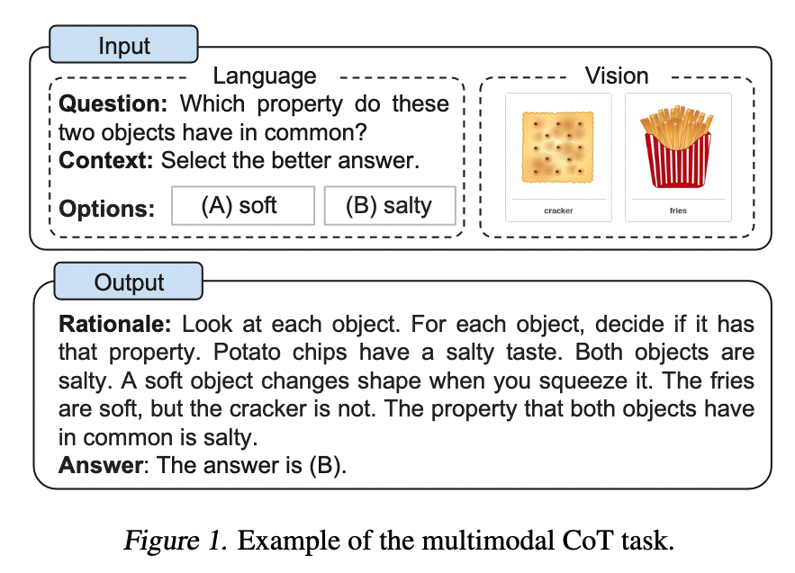
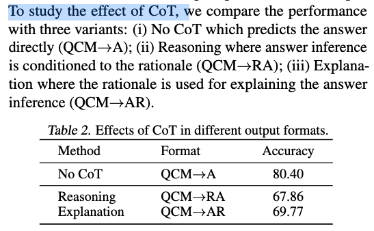
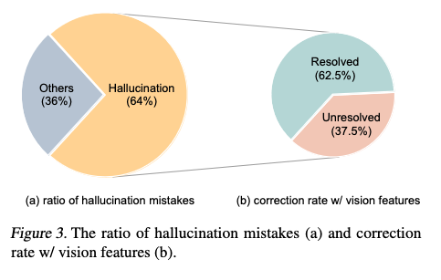
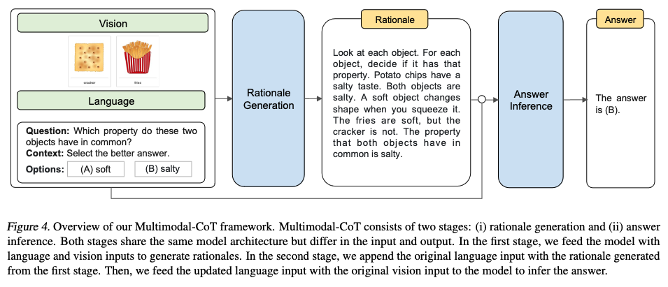
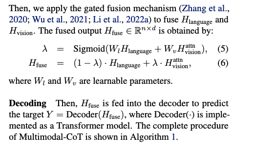
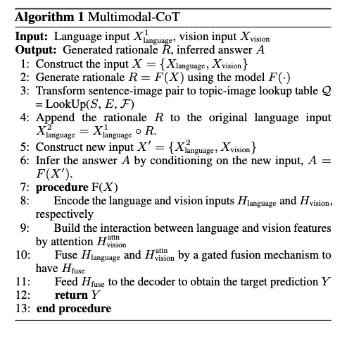

[TOC]
- Title: Multimodal Chain of Thought Reasoning in Language Models
- Author: Zhuosheng Zhang et. al.
- Publish Year: 2023
- Review Date: Wed, Feb 8, 2023
- url: https://arxiv.org/pdf/2302.00923.pdf
Summary of paper

Motivation
- LLMs have shown impressive performance on complex reasoning by leveraging chain-of-thought (CoT) prompting to generate intermediate reasoning chains as the rationale to infer the answer.
- to elicit CoT reasoning in multimodality, a possible solution is to fine-tune small language models by fusing the vision and language features to perform CoT reasoning.
- The key challenge is that those language models tend to generate hallucinated reasoning chains that mislead the answer inference.
Contribution
- We propose Mutimodal-CoT that incorporates vision features in a decoupled training framework.
- The framework separates the rationale generation and answer inference into two stages, the model is able to generate effective rationales that contribute to answer inference.
Some key terms
Multimodal-CoT
- Multimodal-CoT decomposes multi-step problems into intermediate reasoning steps (rationale) and then infers the answer.
- In general, there are two ways to elicit Multimodal-CoT reasoning as follows
- prompting LLMs
- fintuning small models
- the most immediate way to perform Multimodal-CoT is to transform the input of different modalities into one modality and prompt LLMs to perform CoT. Specificaly, it is possible to extract the caption of an image by a captioning model and then concatenate the caption with the original language input to be fed into LLM
- However, there is severe information loss in the captioning process, with a lack of mutual synergy in the representation space of different modalities.
- another solution is to fine-tune language models by fusing multimodal features. As this approach does not rely on LLMs and allows the flexibilit of adjusting model architecture to incorporate multimodal features, this paper focuses on fine-tuning model.
- the key challenge is that language models under 100 billion parameters tend to generate hallucinated rationals that mislead the answer inference
Method
- By incorporating the vision features in both stages, the model is able to generate more effective rationales.
- Our experiments are conducted on the ScienceQA benchmark (Lu et al., 2022a), which is the latest multimodal reasoning benchmark with annotated reasoning chains.
how does CoT prompting work
- the model takes the concatenation of tokens of the question text (Q), the context text (C), and multiple options (M) as the input.

- The key issue arises, the rationale information may not contribute to predicting the right answer.
Improving Few-Shot-CoT
- studies are categorized into two major research lines
- optimizing the demonstrations
- the key is the diversity of demonstration questions
- Partition questions of a given dataset into a few clusters.
- the key is the diversity of demonstration questions
- optimising the reasoning chains.
- problem decomposition
- vote over multiple reasoning paths for a test question
- optimizing the demonstrations
Why rationales might not help
- the plausible reason might be that the model exceeds the maximum token limits before obtaining the required answer or stops generating the prediction early.
- To dive into how the rationales affect the answer prediction, we decouple the CoT problem into two stages, rationale generation and answer inference.

- We speculate that such a phenomenon of hallucination is due to a lack of necessary vision contexts for performing effective Multimodal-CoT.
Model

Solution
- rather than convert the vision information to captions, we convert the vision info into vision features
- use gated fusion


CONCLUSION
- minimise the conversion from one modality to another modality because there will be information loss.